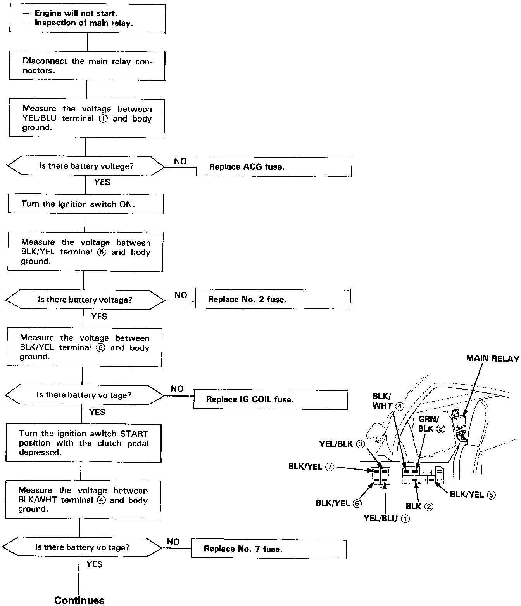
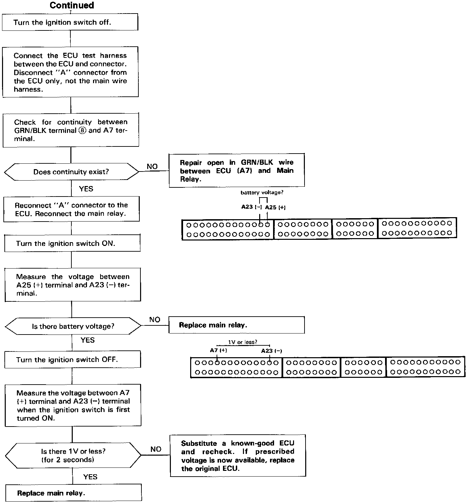

Operation CHARM
: Car repair manuals for everyone.
Home
>>
Acura
>>
1992
>>
NSX V6-3.0L DOHC
>>
Repair and Diagnosis
>>
Powertrain Management
>>
Fuel Delivery and Air Induction
>>
Relays and Modules - Fuel Delivery and Air Induction
>>
Main Relay (Computer/Fuel System)
>>
Testing and Inspection
>>
Main Relay Harness Test
Main Relay Harness Test

